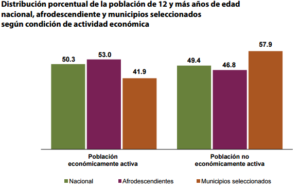
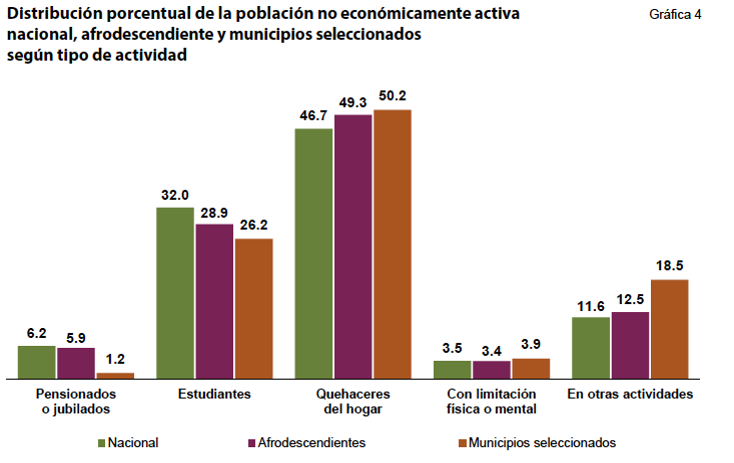
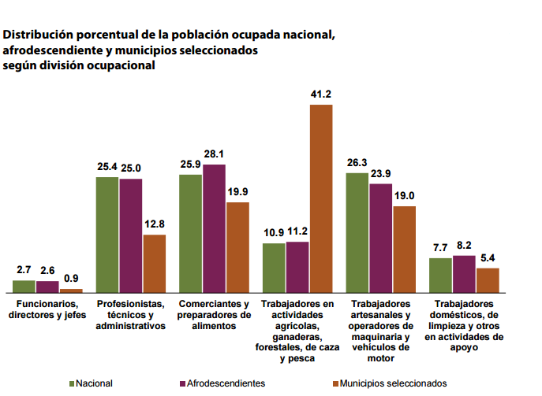
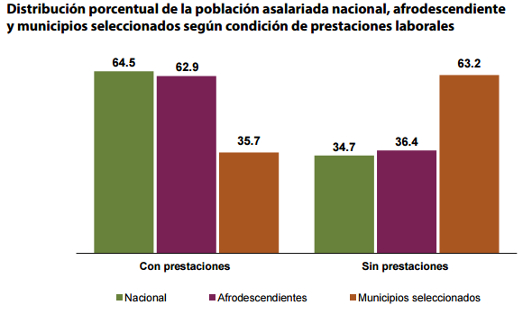

Población económicamente activa
La población de afromexicanas y afromexicanos de acuerdo a su ocupación económica
es:

De los cuales la población no económicamente activa tiene la siguiente
distribución de trabajos:

Observamos que:
-
La actividad mas ejercida entre los PNEA es el quehacer del hogar,
que reagrupa en mayoridad los afrodescendientes y los de los municipios seleccionados.
Sin embargo, los afrodescendientes y los de los municipios seleccionados representan
la proporción mas baja entre los estudiantes.
También, el porcentaje de afrodescendientes en los municipios seleccionados que son pensionados
o jubilados es muy bajo.
- Las diferencias de actividades entre los PNEA son importantes según el sexo.
La mayoridad de los estudiantes afrodescendientes son hombres,
y la mayoridad de los afrodescendientes que hacen quehacer del hogar son mujeres.
Los pensionados o jubilados son en mayoridad hombres,
lo que muestra que los hombres son los que han participado más al mercado laboral durante su vida.
-
La mayoridad de las personas que no trabajan
y no estudian son los que viven en los municipios seleccionados.
Posición en el trabajo

Vemos que la distribución ocupacional presenta similitudes
entre los nacionales y los afrodescendientes: los dos grupos trabajan en mayoridad en funciones comerciales,
técnicos y administrativos.
Sin embargo, los afrodescendientes que viven en los municipios seleccionados trabajan en mayoría
como trabadores agrícolas, es decir en el sector primario.
Así, la distribución ocupacional de estos tres grupos subraya que las diferencias
entre los nacionales y afrodescendientes no son tan fuertes con respecto al trabajo,
aunque estas diferencias económicas aumentan y se ven bien entre los nacionales
y los afrodescendientes que viven en los estaos mas pobres del país.
Prestaciones laborales

Observamos que:
-
Las prestaciones laborales son un derecho que adquiere la población trabajadora
cuando se vincula a un trabajo formal. Incluyen seguros de gastos médicos,
vales de despensa y gasolina, fondos de ahorro,
días de descanso adicionales, estacionamiento, exámenes médicos,
prima vacacional, propina, alimentación, vivienda...
- La mayoridad de los nacionales y de los afrodescendientes
gozan de prestaciones,
aunque la mayoridad de los afrodescendientes que viven en
los municipios seleccionados no gozan de prestaciones laborales, aunque ellos son asalariados.
-
Las mujeres en los municipios seleccionados
gozan de más prestaciones que los hombres de estos municipios.
Además, podemos ver que entre los dos otros grupos,
las mujeres gozan más de las prestaciones laborales que los hombres.
-
Conclusión:
Los derechos de los afrodescendientes asalariados con respecto a las prestaciones laborales deben ser defendidos